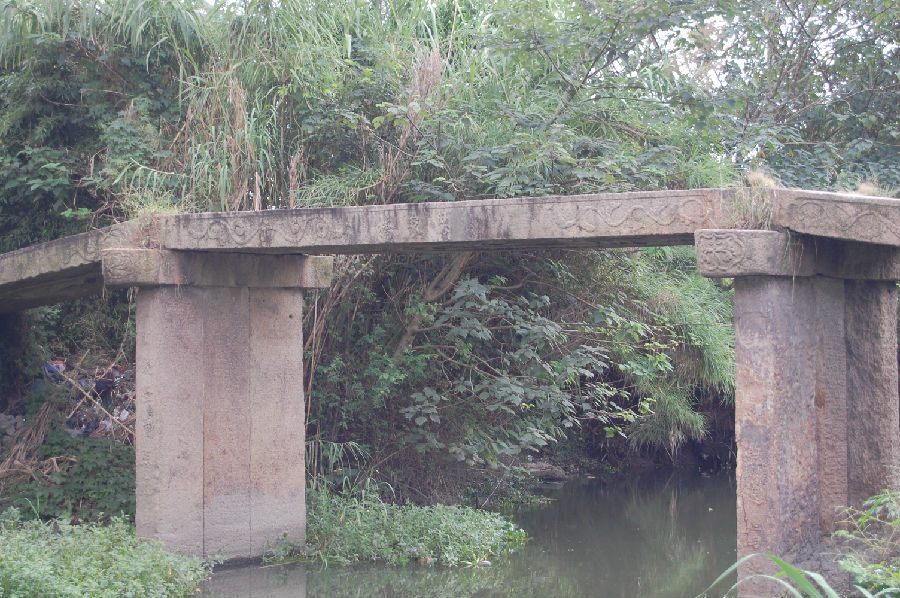

嘉兴市文物保护网 · 市级文物保护点 · 2020-11-03 · 原文

观音桥村思家桥位于嘉兴市秀州区新塍镇观音桥村19组。此桥未见于地方志，始建年代不详，据桥身文字可知重建于清嘉庆八年（1803）。南北横跨对家浜，系三孔无栏梁式石板桥，桥全长32.6米，宽1.68米，桥面和桥柱由3块石板组成，桥底距水面高度2.6米，东西两侧桥额刻“思家桥”，旁镌“嘉庆八年、里人重建”，有桥联（因水深无法辨识），桥身有蟠螭纹、莲纹。两边落坡无存，直接与两岸道路相接。此桥曾处在重要的水上交通要道上，是当地重要的历史建筑，做工考究，保存较好，具有较高的历史价值。2010年公布为嘉兴市文物保护点。